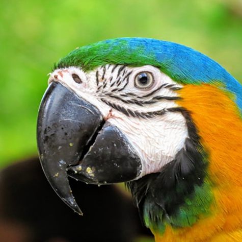

Vida
Selvagem

Por que devo me preocupar?
Este gráfico mostra a área desmatada em alguns biomas do país nos ano de 2024.
Este gráfico mostra um aumento significativo na quantidade de pets abandonados entre 2022 e 2024, com destaque para o aumento de 32,4% em 2024 em relação ao ano anterior.
2025 ZurraTeams All Rights Reserved
Vida Selvagem
Habitats
Sobre nós